| アダルトVRで、世界のセックスが変わる！ (impress QuickBooks) | |
| 吉田 健人 | |
| 株式会社インプレス (2016) | |
はじめに
2016年6月12日、秋葉原で「アダルトVRフェスタ０１」なるイベントが開催された。もともとはアダルトVRの業者や開発者向けに内々に行われるイベントだったのだが、主催者の予想を上回る一般来場者が殺到する事態となった。その待機列は会場となったビルの外にまで伸び、イベントは早々に入場中止となった。
この騒動はニュースとしてネットを中心にその日の内に広まり、結果的にアダルトVRというものを世間に知らしめる契機となった。
そもそもVR（ヴァーチャルリアリティー）は以前からある技術だったが、「オキュラスリフト」「プレイステーションVR」「HTCバイブ」、更にはスマートフォン用の安価なVRグラスといった、主要なヘッドマウントディスプレイが出揃う2016年はVRビジネスの躍進の年として特に期待が高まっていたのである。
ヘッドマウントディスプレイを装着すると、視界いっぱいに映像が広がり、また頭の向きをセンサーが感知して、その動きに合わせて映像を動かす「ヘッドトラッキング」が搭載されているため、まさに自分が映像の中にいるような高い没入感を味わう事が出来るのがVRの魅力である。
新しい技術やメディアを一般に普及させるには「エロ」が鍵になるということは昔からよく言われているが（ビデオデッキの一般家庭への普及など）、アダルトVRフェスタの盛況によって久しぶりにその事を思い出した人も多いだろう。
本書では、「日本アダルトVR推進機構」主催の吉田健人氏にVRビジネス躍進の鍵を握るアダルトVRの現状や可能性、そしてアダルトVRによって変革するセックスについて語ってもらった。
第一章 アダルトVRにアキバが燃えた日
「アダルトVRフェスタ01」は、秋葉原のビルのワンフロアを貸し切って行われた。会場内には360度カメラで撮影しVR化した実写AVをヘッドマウントディスプレイで再生する企業ブースや、3DCGを用いたゲーム感覚のVRコンテンツを展示するクリエイターブースなど、様々なアダルトVRを実際に体験できる展示が集まっていた。しかし主催側の想定を上回る来場者が集まり、ビルの前の道路にまで待機列が溢れることとなった結果、イベントは中止になってしまった。その際、入場出来なかった来場者の前に立ち謝罪していたのが「日本アダルトVR推進機構」主催の吉田健人氏である。あらためて吉田氏にその日のイベントの様子などを振り返ってもらった。
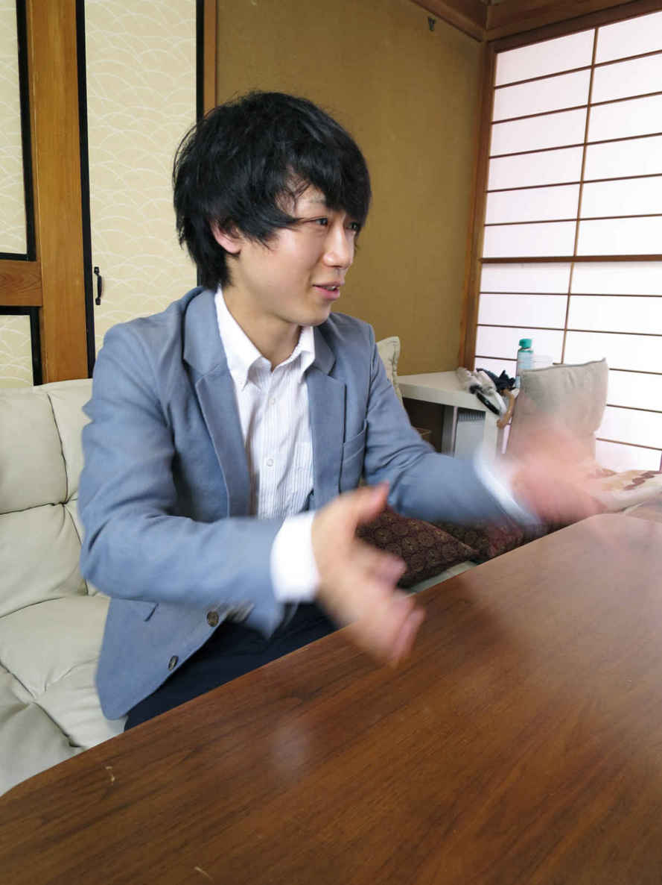
アダルトVRについて情熱的に語る「日本アダルトVR推進機構」主催の吉田健人氏。
――もともと日本アダルトVR推進機構とはどういう成り立ちで出来たんでしょうか？
吉田健人（以下、吉田） 成り立ちの経緯としましては、そもそもVRというものが広く知られていないという事に課題を感じまして、より多くの人に知ってもらうというきっかけとして誕生したのが日本アダルトVR推進機構ということになります。
――そこでアダルトに目をつけられたというのは？
吉田 実際にVRというものでどんな事が出来るのか？ といったところで一番わかりやすいのがエロだと思ったんですね。ところが一般的なVRの分野で仕事をされている方達はそこは避けてきたところだったんです。そこで、VRでエロが出来るということを大々的に打ち出したのが秋葉原で開催した「アダルトVRフェスタ01」でした。
――そしてイベントは予想を上回る大盛況となり話題になりましたね。
吉田 以前から「アダルトVRの会」というものがありまして、そこでお互いコンテンツを持ち寄って情報交換するという事が内々で進んでいたんですが、一度外部に向けてやってみようというのがきっかけだったんです。とはいえ、一般の人に向けては特にこちらからは大々的な告知はしてなかったんです。
――ところが、当日は入場中止の騒ぎになるほどの人が集まりました。
吉田 やはりエロに対する興味が皆さん大きかったんだなと。イベント後は各メディアさんに取り上げられてより注目度が上がっているのが現状ですが、最初は本当に一部のアダルトVRが好きな方や濃い方が集まるイベントとして考えていました。
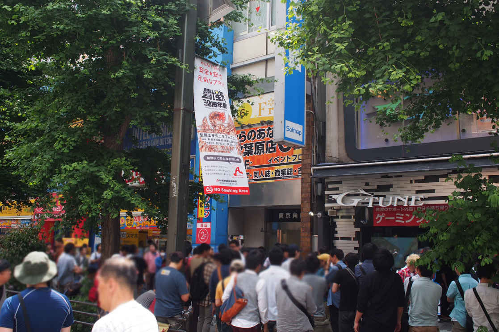
イベント会場となったビルの一階の出口まで人があふれ出していた。
――結果的に一般の人はどれくらい体験出来たんですか？
吉田 実際のところ当日ビルの中に並んでいた方だけが体験してもらえた感じでして...およそ160名くらいでしたね。
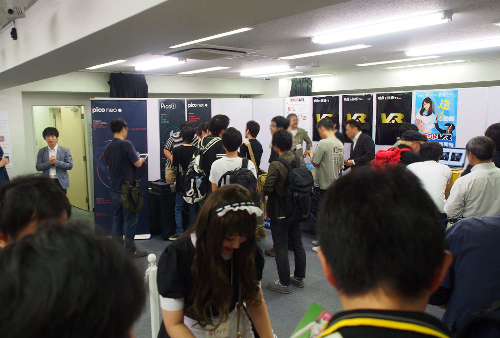
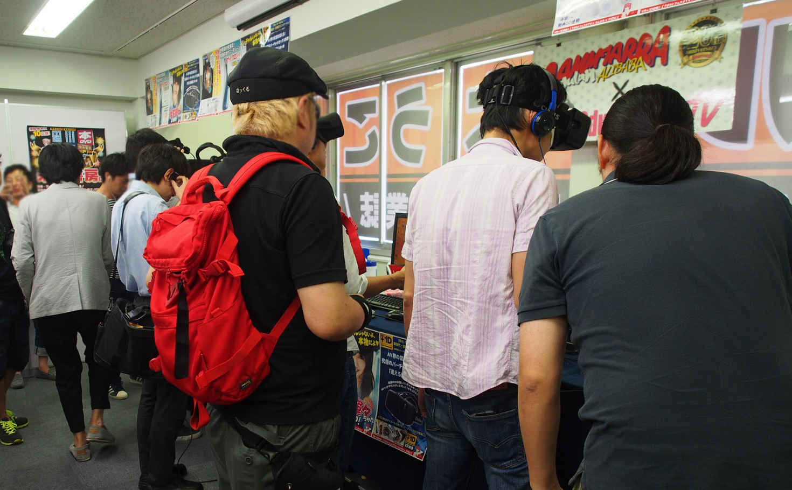
幸運にも入場出来た人たちで賑わう会場内の様子。
――アダルトVRにはどれくらいの企業が参加されているんですか？
吉田 アダルトVRにも大きく分けて2種類ありまして、実写系のアダルトVRと、あとは3DCGをモデリングしてプログラムで作るCG系のアダルトVRですね。そして実写系に限っては実は現状では一社独占という状況でして、それが前回のイベントにも出店されていた「アダルトフェスタＴＶ」さんです。CG系に関しては「DLsite.com」さんが「ImagineVR」さんと提携されて、個人のクリエイターがアダルトVRコンテンツを作りやすくするという環境を今進められているところですね。
――それでは実際にアダルトVRのコンテンツを制作されてるのはまだ少数という感じなんでしょうか？
吉田 そうですね。基本的に3DCGの方は個人の方でも比較的取り組みやすい環境が整っているんですね。ただ実写系の場合は、その技術や機材、そして販路を持っているところが現状では「アダルトフェスタＴＶ」さんに限られているといった感じですね。
――実写系でいいますと、ブルーレイが普及し始めた頃に3Dのアダルトビデオが注目されかけましたがあまり定着しませんでしたね。私も一度見てみたんですが、結局一番立体的に飛び出してくるのがモザイクだったりして...。
吉田 確かに少し前に3Dもあったんですけど、あれが全く...まぁ端的に言えば失敗だったんですよね。というのもあってVRもまた3Dみたいに失敗するんだろうというネガティブな見方もあったりします。ただアダルトビデオ自体の購入者の数が減少していることにメーカーさんも危機感を感じていて、新しく何かないかというところで、やはりVRに期待が集まり始めているということは感じています。
――そういうところで、先日の秋葉原のイベントでは久しぶりにエロが新しいメディアを牽引するという息吹が感じられました。
吉田 そうですね。アダルトVRそのものの認知度が一般に広まったかなというところはあります。ただ当日のあの人出は想像以上でした。最初は本当に内々だけで100名ほどの入場者数で、入退場も自由なイベントとして考えていたんです。今、混んでいた場合でもまた後で試していただけるかなというような想定でいたんですけど、完全に誤算でした。とにかくあれだけ並んでいても体験したいという思いを皆さんが高い水準でお持ちだったことに驚きました。現状では、アダルトVRが体験できる場っていうのがなかなか無くてですね。そこがVR自体の普及をひとつ妨げているのかなと思っています。
――実際に当日アダルトVRを体験された人たちの反応はどんな感じだったんですか？
吉田 最初はやはりお並びされていたのでイライラされてる方もいらっしゃったんですけど、一通りコンテンツを体験されて帰られる際には皆さん笑顔になってらっしゃいましたね。
――アダルトVRは人を笑顔に出来ると！ それを聞くと、なおさらイベントの中止が悔やまれます。
吉田 あれは本当に申し訳なかったです。警察も来られまして...。それはイベントの内容ではなく会場の前の道路まで伸びた行列が問題だったんですが、今すぐなんとかしなければならないということで、やむなく中止という対応を取らせていただきました。
――エロい内容でけしからんという事ではなかったんですね。
吉田 そうですね。内容についてのお叱りっていうのは今のところ入ってきてませんし、その後のマスコミの報道でもエロということで叩かれるという事はなかったと思います。
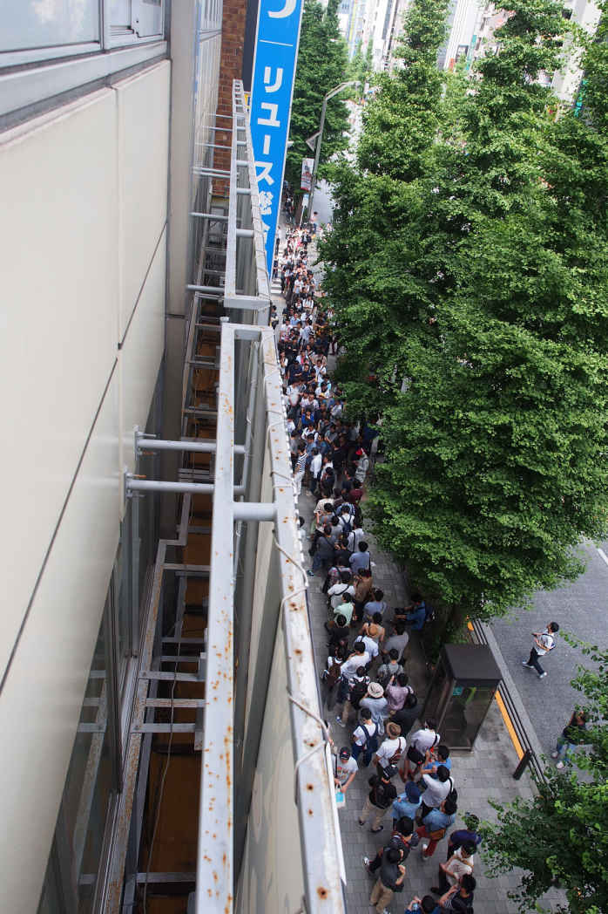
会場の外の道路まで行列は伸びていた。
第二章 アダルトVRの楽しみ方
イベントの盛況と、その後のネットを中心としたニュースの注目度によって業界もユーザーも期待を寄せていることが明らかとなったアダルトVR。しかし実際にアダルトVRを体験できた人はいまだ少ない。果たしてアダルトVRから得られる興奮や快楽はこれまでのアダルトメディアとどう違っているのか。現状どのようなコンテンツがあり、どうすれば実際に体験することが出来るのか。さらに実写系アダルトVRとCG系アダルトVRそれぞれの特徴や課題点などを吉田氏に語ってもらった。
――「アダルトVRフェスタ01」では国内で現在遊べる、もしくは開発中のアダルトVRコンテンツが多数出展されていましたが、その中で特に吉田さんが気になったものはありましたか？
吉田 ありましたね！ 「VRJCC」さんが開発されている『なないちゃんとあそぼ！』というオキュラスリフト対応のアダルトVRゲームなんですが、イベントで試された皆さんの評価も高かったですし、私自身も事前に体験させて頂いた時よりかなり仕上がっていて感動しました。
やっぱり個人的にVRで何がしたいかというと『セックス』なんですよね。このあたりはいろんな考え方の人がいらっしゃいまして、VRを使ってオナニーがしたいのかセックスがしたいのかというところの違いがあると思っています。
――でもアダルトVRでやれることっていうのは結局のところ『オナニー』ですよね？
吉田 いや、それをオナニーとしてしまうのか、新しい行為...バーチャルセックスとしての行為なのかというところがアダルトVRのキモだと思っているんです。
私はもともと性交の研究もしていまして、オナニーとセックスでは出す精子の質が違ってくるんですね。分泌されるホルモン的にいってもセックスの方が満足度が高いんです。なので個人的にはやはりセックスをバーチャルで出来るようにするのがアダルトVRだという思いがあります。
――なるほど、エロ本やアダルトビデオを見ながらオナニーするのとは違うんだと。
吉田 VRとは『見る』ものではなくて『体験できる』ものだと思っているんです。単にVRを通してエロい映像を見てオナニーするだけでは従来のものとそこまで相違がない事になってしまいます。ヴァーチャルでエロい事を体験出来るようになったことこそがVRの魅力だと思っています。
実際、自分で初めてVRをしたときに、これまでの体験とは完全に違っていて感動したんですよ。
――それは視覚的にですか？ 肉体的にですか？
吉田 肉体的にです。私が最初に見たアダルトVRはハーレム物で、複数の女の子にキスやフェラをされるという映像だったんですけど、映像の中のチ○コの位置に体を動かして自分のチ○コを重ね合わせると、あたかも本当に自分がフェラされてるような感覚を感じたんですね。
――個人差はあるでしょうが、映像だけでそこまで感じれるのは凄いですね。では、『なないちゃんとあそぼ！』は更にその先へと進んでいたんでしょうか？
吉田 なないちゃんはですね。エアーで膨らませたドールにジャイロセンサー代わりのスマートフォンが設置されていまして、それがヘッドマウントディスプレイの中では3DCGの可愛い女の子（なないちゃん）に変換されて見えるというものです。そして実際にその人形を動かすと装着されたスマートフォンのセンサーに連動して映像の中のなないちゃんも同じように動くんです。例えばドールを引き寄せれば、映像の中のなないちゃんも近づいてくるし、体の上にドールを乗せて揺らせば、なないちゃんが騎乗位でピストン運動されて喘いでいるという具合に。これはもうほとんど「セックス」と言っていいんではないかと思いました。
――ゴクリ...。それはちょっと体験してみたいです。
吉田 『なないちゃんとあそぼ！』はコミックマーケット等でも一般発売されるそうです。もちろんそれなりに性能の高いパソコンとオキュラスリフトが別途必要とはなりますが...。オナニーと違ってセックスは今までは相手がいないと出来なかったわけですが、それが一人で自宅で自由にセックス出来てしまうというのは画期的なことだと思います。これまでなかった「ヴァーチャルセックス」という新しい行為が普及する可能性を強く感じました。
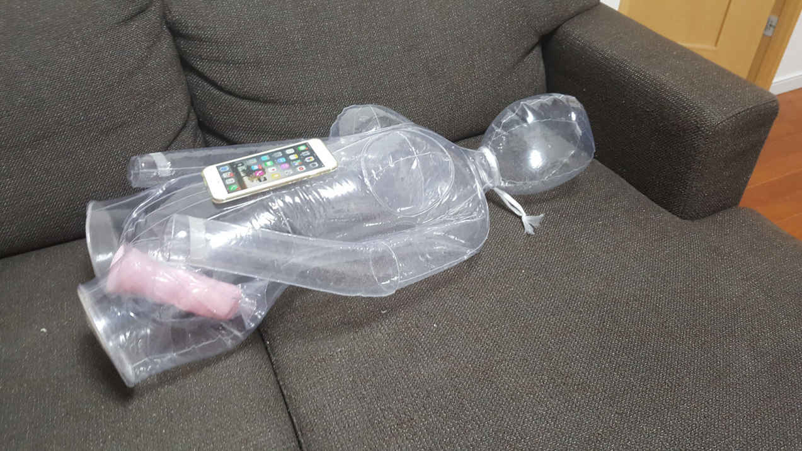
『なないちゃんとあそぼ！』。エアドールにスマートフォンとオナホールが装着された外見は簡素なのだが...。
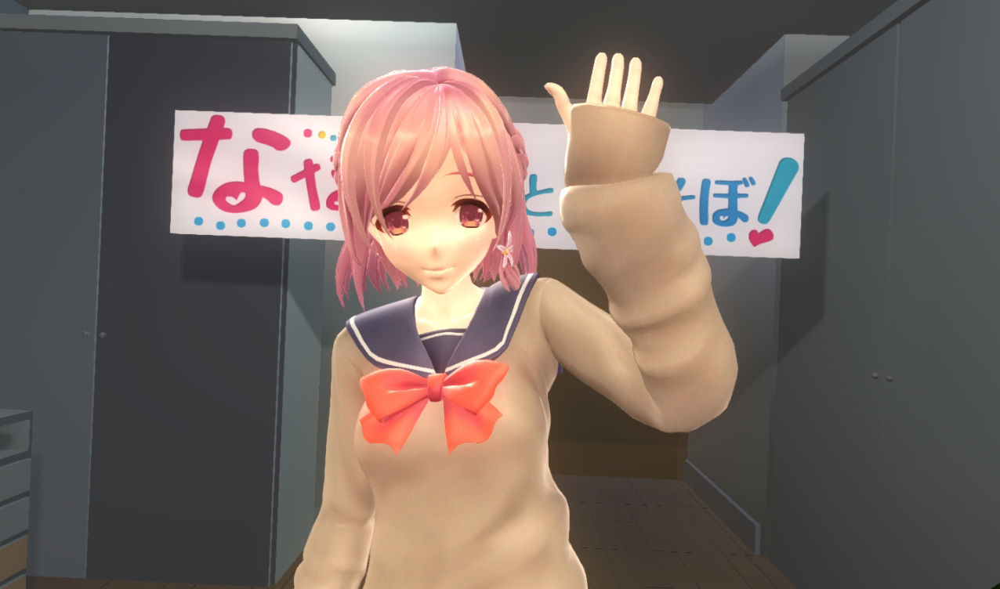
ヘッドマウントディスプレイの中にはなないちゃんの真の姿が！
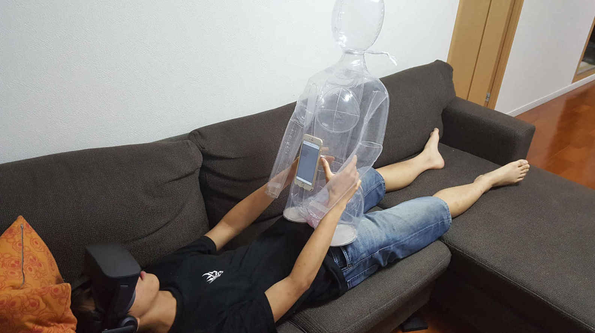
さらにエアドールを動かすとスマートフォンがジャイロセンサーとして機能して...。
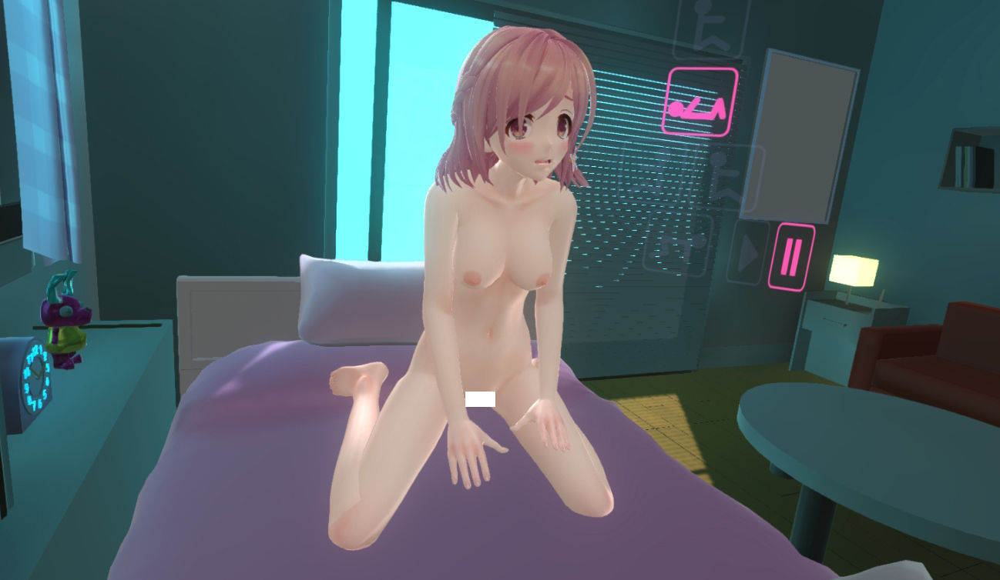
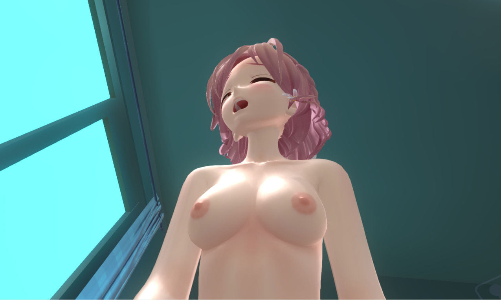
なないちゃんも同じ体勢になって喘いでくれる！
――CG系ですと他にどんなものがありましたか？
吉田 「IT芸社漢組」さんの『VR腹筋ローラー』と『大人のBabulus』は面白かったですね。『VR腹筋ローラー』の方は、ヘッドマウントディスプレイを装着したまま、通販番組で有名になった腹筋を鍛えるローラーを使うんですが、地面に四つん這いになってローラーを使って前に進むとディスプレイの中ではスカートをめくった女の子の股間が迫ってくるというというものでして...これならつらい筋トレもはかどるんじゃないかなと思いました（笑）。
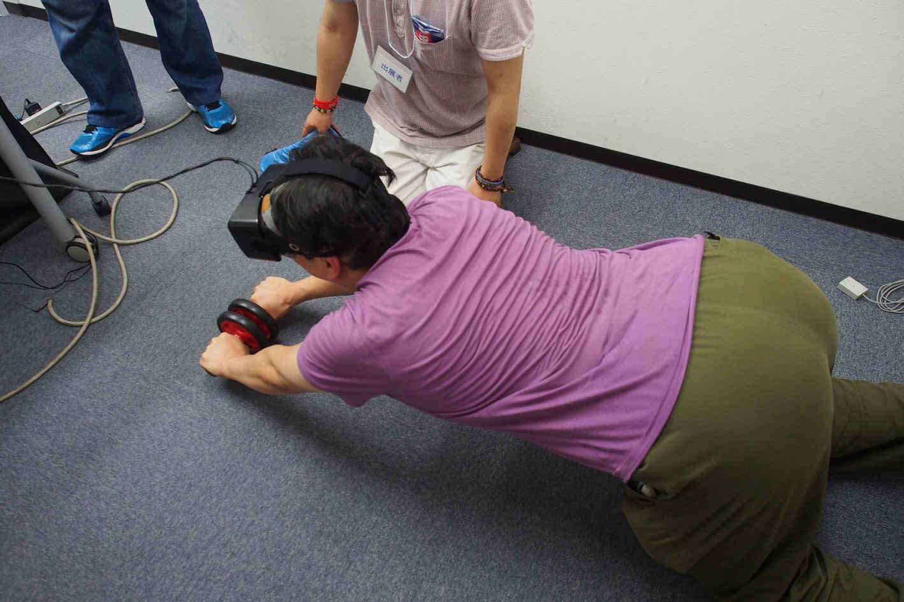
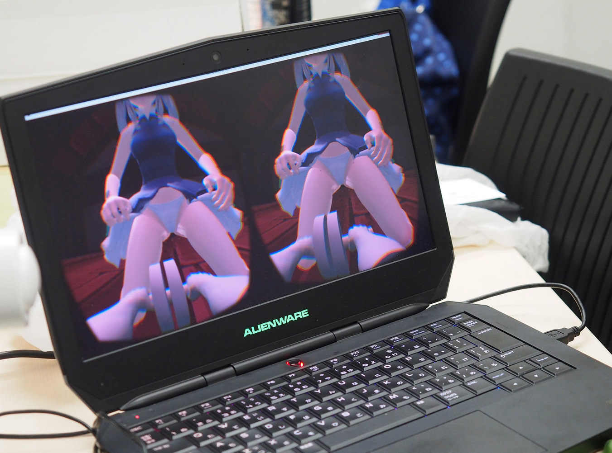
腹筋ローラーを使って進んだ目の前には女の子の股間が！
――『大人のBabulus』の方はどのようなものだったんですか？
吉田 手の動きを再現して上下する全自動の手コキマシーンというオナニーグッズが以前から市販されているんですけど、ヘッドマウントディスプレイの中の女の子が手コキしてくれるVR映像と手コキマシーンの動きを連動させるというシステムでした。いわば「バーチャル手コキマシーン」ですね。これはすぐにでも製品化して欲しいと思わせる実用性の高さを感じました。
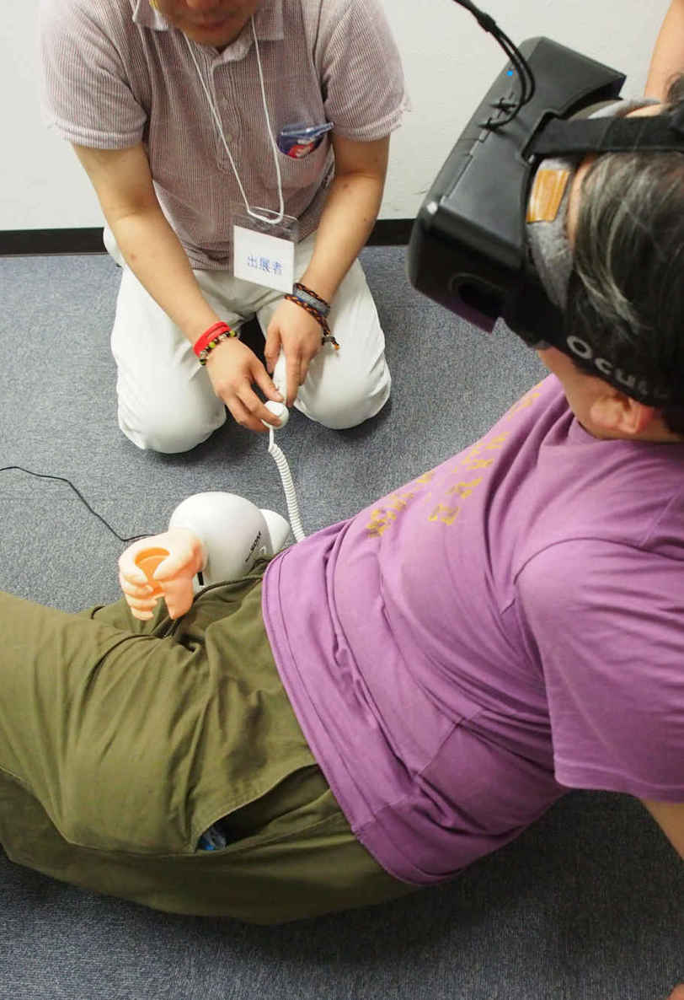
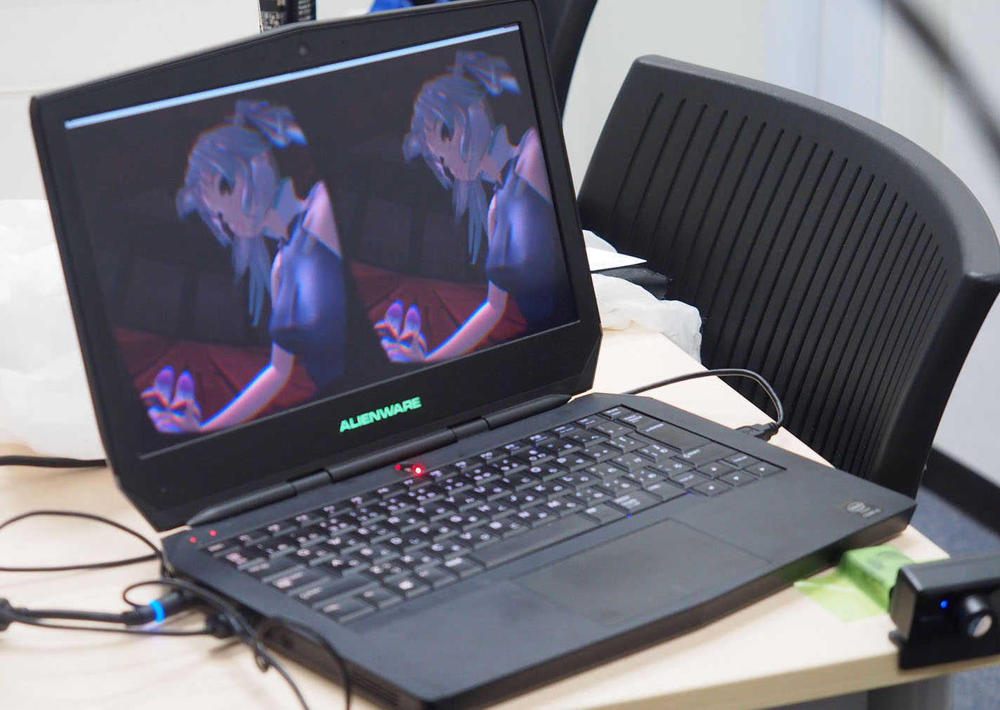
『大人のBabulus』。映像の中の手コキとオナニーグッズの動きが連動していて実用性抜群！
――さらに一風変わったユニークな出し物もあったとか？
吉田 「ゲスの極みエンジニア」さんの『D=60』ですね。段ボール箱に空いた穴の中に手を入れると、センサーによって箱の中のファンが起動して風が手に当たるんですが、それが時速60キロの風速であたかもDカップのおっぱいを揉んでるような疑似体験ができるというものでした。
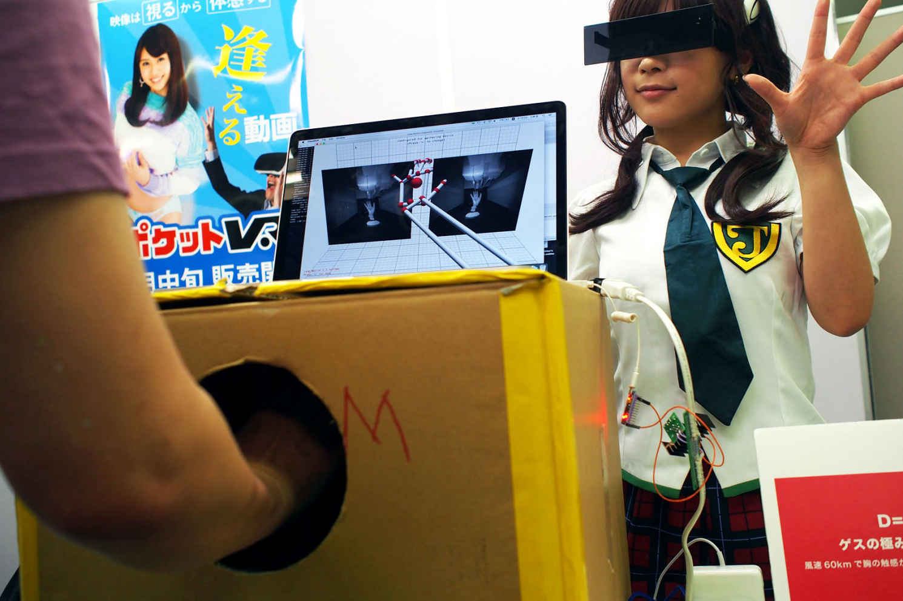
風の力でおっぱいの感触を再現する『D=60』。
――実際にやってみておっぱいの感触はありましたか？
吉田 そうですね。柔らかい感じがして気持ちよかったですよ。ほんのり暖かい温風で、ずっと入れてたいなと思いました。ただ、私は手ではなくチ○コを入れたら疑似パイズリが出来るのかなとも思ったんですけど、今のところ風を調整するセンサーが手の形や動きしか認識出来ないそうで、チ○コを検出するところまでは出来てなかったですね...。
――ま、まぁ...そこまでしようとする人がいる事は想定外だったんじゃないですかね。その一方で、実写系VRの現状はどのような感じなのでしょうか？
吉田 実写系は簡単にいってしまえば主観ものアダルトビデオのVR版ですね。主観視点で、なおかつ自分の顔の動きに合わせて映像も動きますのでより没入感が高まるようになっています。ここで先程お話ししたVRでオナニーがしたいのかセックスの疑似体験がしたいのかという問題が出てきます。
――問題といいますと？
吉田 例えばパイズリのシーンがあるとしますよね。従来のオナニー目的のアダルトビデオではそういう時にはカメラがおっぱいに寄ってアップになったりするわけです。しかしVRは完全主観ですから、顔のある位置からカメラがおっぱいに寄ることが出来ないので距離が空いてしまうんですよね。フェラシーンとかもそうで、普通のAVではフェラ顔や口元をアップで見れたりするわけですが、完全主観だと引いた視点のままということになります。それをどう捉えるかによって変わってきますよね。もっと近くで見たいと思うのか、その距離感をリアルな臨場感として楽しむのか...。
あとオナニー時の体勢問題も出てきます。完全にVR映像に合わせた体勢でオナニーをすればより没入感が高まるわけですが、普通に寝っ転がってオナニーしていると、映像と体勢が合わないという事も当然出てきます。
――なるほど。映像の中では男優が立ってフェラさせているのに、家の中で立ってオナニーするわけにもいかないということですね。
吉田 まぁ私は映像に合わせる派なのでそういう時はちゃんと立ちますけどね（笑）。
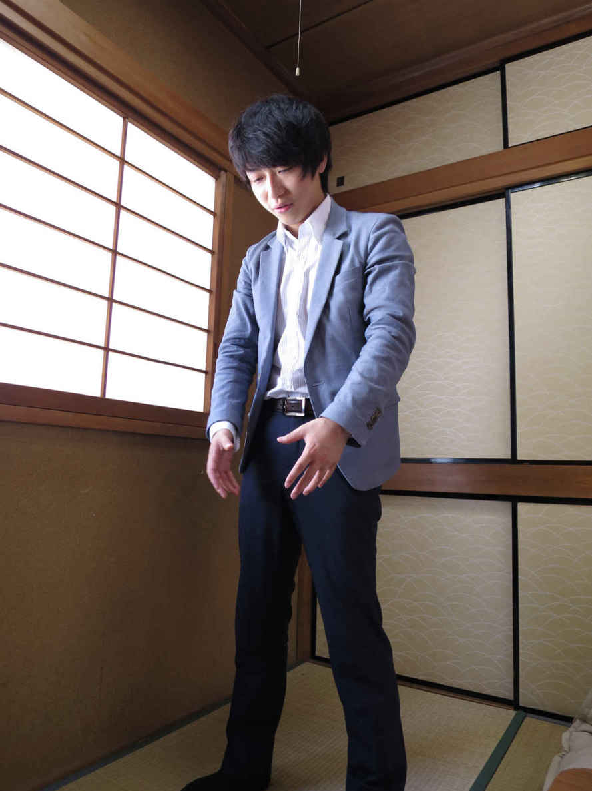
立ちフェラの映像の時には自分も立って合わせるという吉田氏。
――自分の顔の向きに合わせて映像が動くということは、撮影の時に360度の映像を収録してるんでしょうか？
吉田 アダルトVRに関しては、基本的に上下左右180度くらいの範囲ですね。セックスの時に真後ろとか見ることはほとんど無いわけですから、360度もの映像は必要ないんです。
――今、VRの実写のアダルトビデオは何タイトルくらいあるんですか？
吉田 100タイトルくらいですね。国内のものですとそれらは全て「アダルトフェスタＴＶ」さんのみの配信となっています。やはり特殊な撮影によるコスト的な問題やデータ容量が重いこともあって5分から20分くらいの短めの作品が多いです。
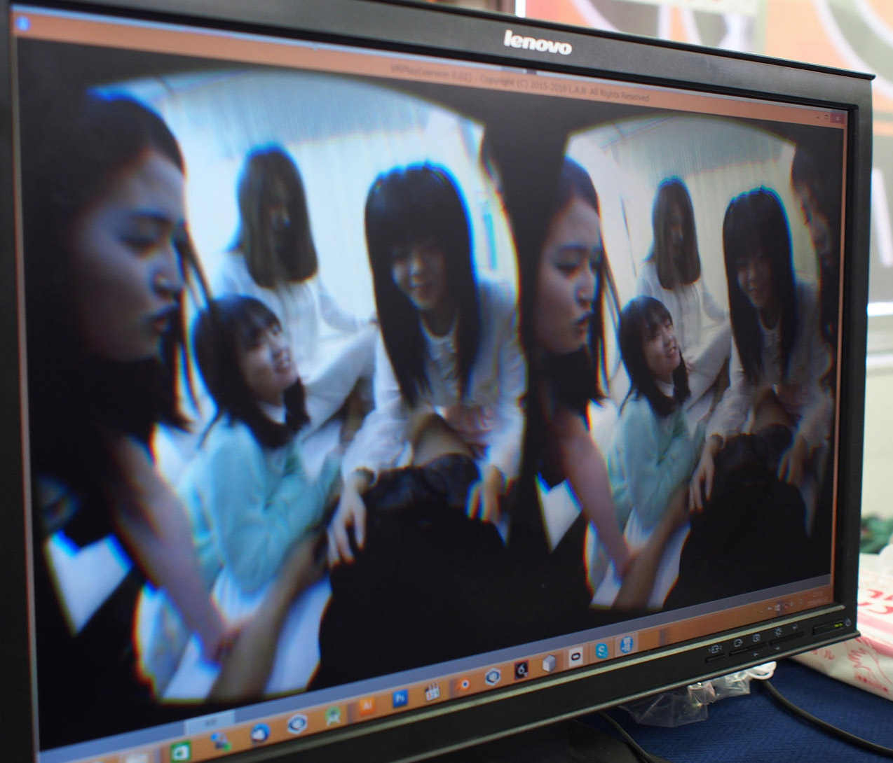
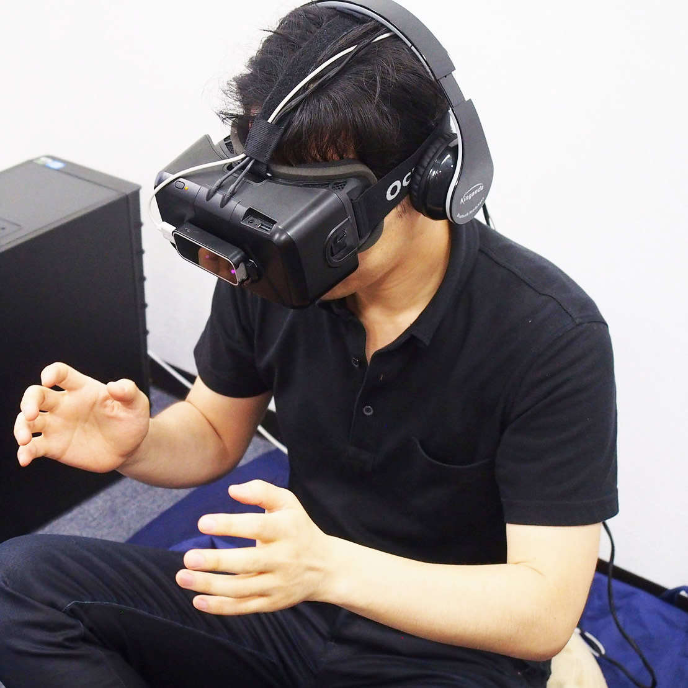
主観視点のアダルトVR映像をヘッドマウントディスプレイを通して見ると、女の子たちがリアルに目前に迫ってくる臨場感が得られる。
――そういったVRアダルト動画を手軽に楽しむ方法はないんでしょうか？
吉田 最初はやはりスマートフォンなどで試してもらうのがいいと思いますね。「アダルトフェスタTV」さんのサイトからサンプル動画などをダウンロードしていただいて、フリーのVR動画再生アプリで再生することが出来ます。スマートフォンだけでも画面を動かした先に合わせて映像が動くという様子を楽しめるので、結構「お、凄い」と感じてもらえると思います。そこから更に没入感を得ようとするとスマートフォン対応のVRグラスが必要となりますね。
――スマートフォン対応のVRグラスにはどんなものがあるんですか？
吉田 安いものですと雑誌の付録などに無料でついていたり、1000円くらいで売られているGoogle Cardboardといった紙製のものがあります。簡単な組み立て式でスマホを差し込むことでVR映像を手軽に楽しむことが出来ます。ただしこれらには頭に固定するバンドがついてないものが多いので、両手が自由にならないのがアダルト用途として考えると不向きかなと思いますね。
――それ以上の価格帯のものになりますと？
吉田 2000～4000円の価格帯のものは本体がプラスチック製でヘッドバンドもついているので、両手フリーで楽しむことが出来ます。ただしこのあたりの価格帯までのものはレンズ性能がそれほど高くないので、目の前に広がる映像の視野角や距離感の面で物足りない面も出てくるかもしれません。
現状でおすすめなのは「GearVR」と「HOMiDO」ですね。レンズ性能が良くなっていて映像への没入感も問題ありません。どちらも価格が9000円台となりますので、スマートフォン用VRグラスとしては高価な部類ですが、パソコン用のヘッドマウントディスプレイの10分の1の値段で買えます。
ただし「GearVR」はGalaxyS6／S6edge専用となっているので、iPhoneや他のアンドロイドスマートフォンをご利用の方は「HOMiDO」という選択になりますね。
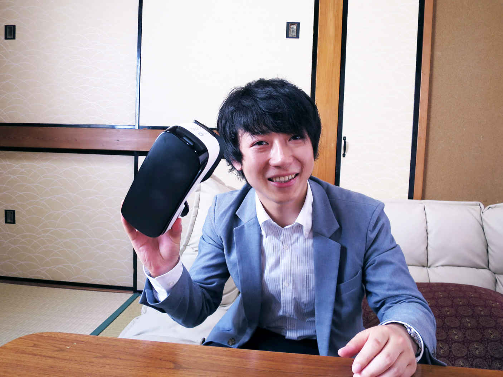
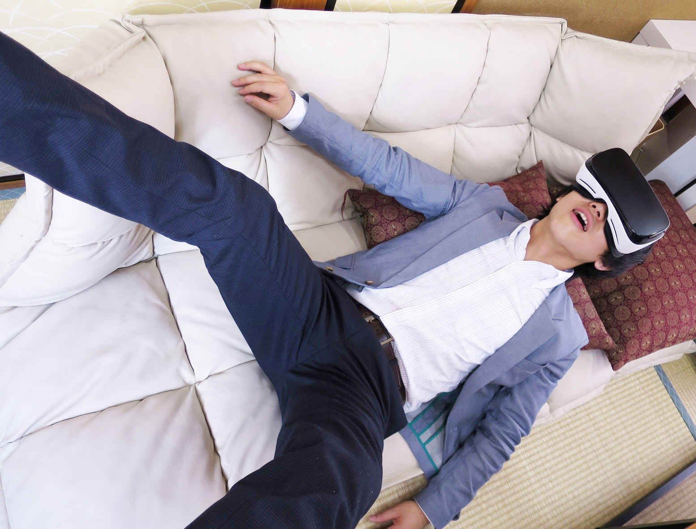
アダルトVRを手軽に体験するにはスマートフォンがおすすめと語る吉田氏。
――注目度の高いPSVRはどうなんですか？
吉田 私もデモを体験してみたんですけど、ゲームのVRは国内では恐らくPSVR一択になるのかなと感じました。価格的にもPS4本体と合わせて10万円で一通り揃えられますし、ヘッドマウントディスプレイ自体も軽くてフィット感が素晴らしかったです。もちろん映像のクオリティもかなりのものでした。ただやはりソニーさんなのでアダルトコンテンツに関しては現状ではNGとなってるんですね。それに近いものとしてエロ抜きの恋愛シミュレーションゲームなどはリリースが予定されているんですが...。
――では、アダルトVRをがっつり本格的に楽しみたいという人は他のヘッドマウントディスプレイに流れるしかないんですね。
吉田 そうですね。「オキュラスリフト」や「HTCバイブ」といった10万円相当のヘッドマウントディスプレイと、相応に高性能なパソコンが必要となります。
――吉田さん的にはアダルトVRは実写系とCG系のどちらがお好みですか？
吉田 ん～～どっちもイケますね（笑）。ただ、現状ではCGのクオリティがまだ低いので、実写の方に分があるのかなというのはあります。一方でもちろん実写にも課題があって、CGと違って思うように動いてくれないというインタラクティブ性の自由度の低さという問題はありますね。そこはディレクションの仕方でなんとかカバーしたいなとは思っています。
――吉田さんがVR用のアダルトビデオをディレクションするとしたらどういう感じになりますか？
吉田 例えば既存のアダルトビデオでよくあるソープランド体験物で撮るとしたら、お店に入店するところから始められればVRの醍醐味が出ると思うんですよね。先程も言いましたが現状ではやはりオナニー用に特化した、抜きどころの映像だけをVRで見るという作りになっているのが多くて、それはちょっと勿体ないかなという気はしています。素人物のハメ撮りビデオなら、ラブホの入り口から一緒に入って部屋を選ぶところからヴァーチャルで体験出来るようにすればより気分的にも高まるんじゃないかなと思っています。
――オナニーしたいだけなら早送りで飛ばしちゃうところですね。
吉田 そうですね（笑）。従来のアダルトビデオならばそこは「見てる」だけなので早送りするのも仕方ない事です。でも、自分がそこにいると「体感出来る」のであれば話は違ってきますよね。あとナンパ物とかでも、自分で実際に街に出てナンパをするのは勇気がいりますけど、ナンパしてる気分になれるVRが出れば面白いと思うんですよね。ヌキどころだけではなく、その前後も含めた「体験」をベースとしたものが今はまだ出来ていないので、そういったディレクションは進めていきたいと思っています。
――確かにそういうのはゲーム性もあって面白いかもしれないですね。団地ひとつをまるごと撮影して、階段を降りてくるＪＫのスカートを下から覗いたり、隣りの部屋を覗いたら他人の奥さんがオナニーしてて、そこに入っていって一緒にプレイ出来るとか...。
吉田 ゲーム的な考えだとそういうのも面白いですね。というか、まだまだこれからの分野なので、「こういうのエロい」とか「あんなプレイがしたい」という願望をVRで実現出来るのではという期待感を皆さん抱いてらっしゃると思うんですよね。やはり性癖というのは人それぞれですので、自分だったらこういう事がしたいという色んな楽しみ方をアダルトVRで提供していきたいと思っています。
第三章 アダルトVRで変わるセックスライフ
既存のコンテンツとは一線を画す没入感が魅力のVR。現状でもスマートフォンなどで気軽に体験することも出来るが、将来的にはもはや現実と仮想の区別がつかなくなる領域にまで発展する可能性もあるようだ。
一発ネタともいえるユニークな発想でアダルトVRの多様性を提案するCG系、従来のアダルトビデオからの変化を模索する実写系、2016年、大きな一歩を踏み出したアダルトVRはこの先どのような発展を遂げていき、我々のセックスライフにどんな影響を及ぼすのだろうか？
――アダルトVRは実際のセックスにどこまで近づけられるのでしょうか？
吉田 私の中では従来のセックスに近づけるというより、完全に新しいものですね。いわばアダルトVRとは『オナニーの感覚でセックスが出来る』というのが画期的なんです。
オナニーの良さっていうのは相手に気を使わず自分の自由に出来るという事だと思うんですよね。でもセックスだとそうはいかないじゃないですか。実は先日も風俗に行ってきたんですが、私はおっぱいが大好きなので、その時も無茶苦茶おっぱいを揉みたかったんですが「ちょっと痛いからやめて」と言われてしまいまして...。そういった煩わしさから解放されるのは大きな利点ですね。
――VRを推しつつもしっかり現実の風俗にも行かれてるんですね（笑）。
吉田 まぁフィールドワークの一環ですね（笑）。
――風俗店にアダルトVRを導入するというのもアリですかね？
吉田 実際にそういう話もありますね。具体的にいうと、その店の一番人気の子のVR映像を見ながら、現実では違う子が相手してくれてるというような...。
――のぞき部屋で鏡越しにお姉さんの裸を見ながら、おばちゃんに手コキしてもらうといったシステムは昔からありますが、それのVR版といった感じですね。
吉田 そうですね。で、実際に似たような事をちょっと試してみたんですよ。自分がVR映像を見てる時に女の子にちょっとチ○コを触ってもらったんですけど、思いのほかビクビクッとくる刺激的な感覚が得られました。
これが実現すれば、風俗嬢は年齢が上がるにつれてテクニックは増すんですけど、見た目の需要が減っていくという問題が解消出来るんじゃないかと思いますね。見た目若いのにテクニックは滅茶苦茶あるという...。
――しかし、それだと行為が終わるまでヘッドマウントディスプレイが外せないですね。
吉田 もう入店の時からつけたままでもいいかもしれません。実際には薄暗く狭い店内なのにVR上では広くて豪華なお屋敷に見えるみたいな感じで。そこでハーレムプレイなんかも出来ますね。直接相手してくれるのは一人ですけど、映像上は10人以上の女性が代わる代わる相手してくれるといった風に。
――ちなみに吉田さんはもともと風俗にはよく行かれてたんですか？
吉田 18歳の頃から行ってましたね。最初に行ったのはキャバクラみたいに女の子が隣に座ってお話しながら飲んだりしてるんですけど、そのうち膝の上に乗っかってきてキスやおっぱいが触り放題になるという店で...。
――いわゆる『おっぱいパブ』というやつですね
吉田 そうですね。その最初の時の女の子があまりにも良すぎて風俗の水準値が上がってしまったんです。で、2度目に違うおっぱいパブに行った時についた子がいまいちでして...チェンジを5回くらい繰り返した結果、店をつまみ出されてしまうという事もありました。
――そりゃそうでしょうね（笑）。
吉田 その後、風俗好きが高じて風俗店の従業員のバイトもしてたんですが、仕事が終わるとその足ですぐ別の風俗店に遊びに行ってしまうので、結局その日の給料よりもお金を使ってしまうという日々でした。
――素人はどうだったんですか？ 普通に恋愛からお付き合いみたいなのは？
吉田 私はこうみえていつも気持ちは童貞でピュアなんです。なので女の人に対して性の対象として割り切れない面がありまして...そこがいつも苦悶しているところなんです。そこで愛のあるセックスが出来れば良かったんですけど、自分は「好きな人とはそういうことはしない」みたいに分けてしまうタイプだったんです。
――恋愛とセックスは別だと。
吉田 そうですね。特に私は性欲が強かったり、特殊な行為にハマったりしたこともあったので、相手の事を考えて自分の欲を抑え込まなくてはならなかったんです。風俗でも相手が人間である以上は100％自分を解放する事は出来なくて...。
純粋に自分のやりたい時にやりたいようにやれるセックスを追い求めた結果、ひとつの答えとしてアダルトVRに行き着いたという感じです。
――今後、アダルトVRはどのような発展を遂げていくんでしょうか？
吉田 VR業界ではよく「VRの次に来るのはARだ」と言われています。
――でもARって以前からある技術ですよね？ 実際の風景をスマートフォンなどを通して見るとそこにアニメのキャラクターとかが合成されて表示されるという...。最近だと「ポケモンGO」などにも使われていますが。
吉田 はい。次に来ると注目されているのはいわば「第二世代AR」ですね。これにはVRにおける「オキュラスリフト」や「HTCバイブ」のような、AR用のヘッドマウントディスプレイの実用化が不可欠です。
――AR用のヘッドマウントディスプレイとはどのようなものなんですか？
吉田 例えばマイクロソフトが開発した「ホロレンズ」はメガネ型で、眼球に映像を照射するものです。これを使えばメガネを通して見える現実の風景にCGなどの映像を重ね合わせて見ることが出来ます。
――VRとARの違いは何なんでしょうか？
吉田 VRは「仮想現実」と言われるように、ヘッドマウントディスプレイに遮られた視界の中に映し出される別の世界の映像をあたかも現実世界のように認識して没入していける技術。かたやARは「拡張現実」と言われていますが、自宅などの見慣れた現実の風景の中に新たな映像を付加しようとする技術ですね。
――無理やりエロい話に絡めるとすると、VRは自宅にいながらにして店舗型の風俗に遊びに行けるようなもので、逆にARは自宅に風俗嬢がやってきてくれるデリバリーヘルスみたいなものでしょうか？
吉田 そうとも言えますね（笑）
――ちなみに、アダルト分野におけるARの強みなどはありますか？
吉田 たとえば私はパソコンで洋物のアダルトVRも見るんですが、やっぱりいいんですよ。なぜなら海外は無修正なのでモザイクがありませんから。
――あぁここでモザイク問題が。
吉田 そうなんです。で、例えばフェラチオシーンの映像があるとして、VRだと国内では当然男優のチ○コにモザイクをかけなくてはいけないんですが、これがARだと話が違ってくるんです。
ARですと女の人が口を開けたり舌を動かしてフェラチオしているような映像をディスプレイ上に映して、そこに自分のチ○コを重ね合わせるようにすれば、チ○コ自体は現実のものなのでモザイクをかける必要はない。つまりARはモザイクなしのフェラチオシーンの出来上がりとなるわけです。
――実際の風景が透過して見えていて、そこに女の子の映像を付加出来るというARならではの手法ですね。
吉田 そうですそうです。そして今出ている話ですと、オナホールにARで映像を表示しながらヤレるようになったりということも取り組まれています。これがうまくいけば、オナホールのパッケージにAV女優さんの写真が使われていることがよくありますが、正にそのパッケージの女優さんの映像をオナホール上に映し出して、そこに自分のリアルチ○コを挿入するという事が出来るようになります。
――そういったアダルトARはすぐに遊べるようになるのでしょうか？
吉田 先程申し上げた「ホロレンズ」も今はまだ実用面での課題もあるようですし、ARのヘッドマウントディスプレイが一般に行き渡って気軽に遊べるようになるのはもう少し先になるでしょうね。まずはVRが広まる事が重要です。VR自体もよりリアルな体験が出来るように人間の五感にフィードバックする開発が進化していっていますし。
――VRの五感へのフィードバックに関しては今のところどのようなデバイスの開発が進んでいるんでしょうか？
吉田 VRでは視覚と聴覚の他に今は触覚のデバイスの開発も進んでいます。例えば五指に装着して電気信号で重力を感じさせるというグローブ型デバイスなどもありまして、その技術を使えばおっぱいを揉むというリアルな感触も味わえるようになるはずです。
VRというと今はまだ視覚に限ったデバイスが注目されてるところですけど、これから触覚や嗅覚なども感じれるデバイスが出揃ってくればヴァーチャルリアリティーが現実として体験出来るようになってくると期待しています。
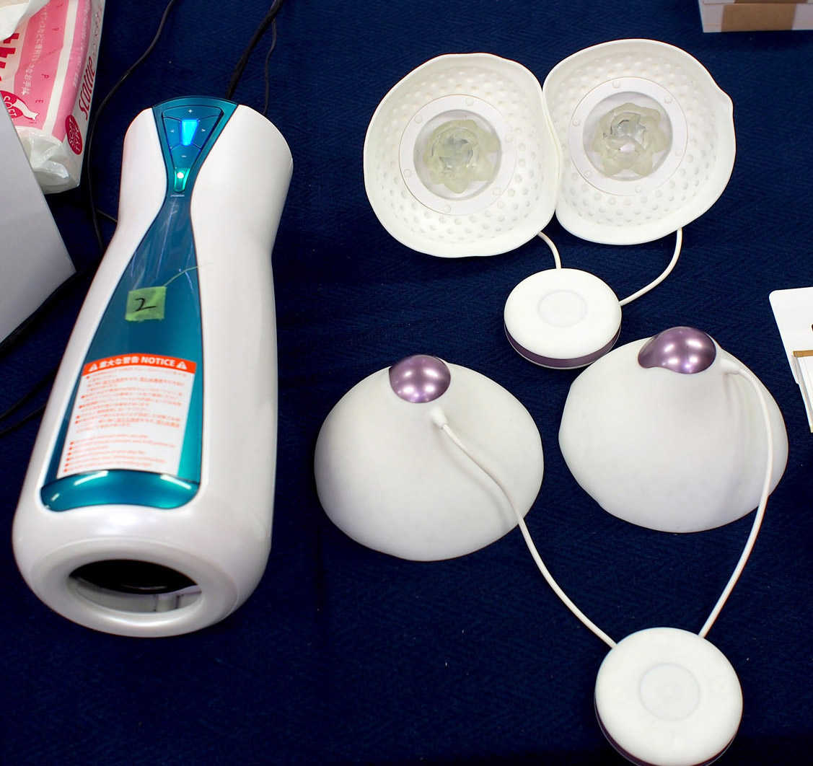
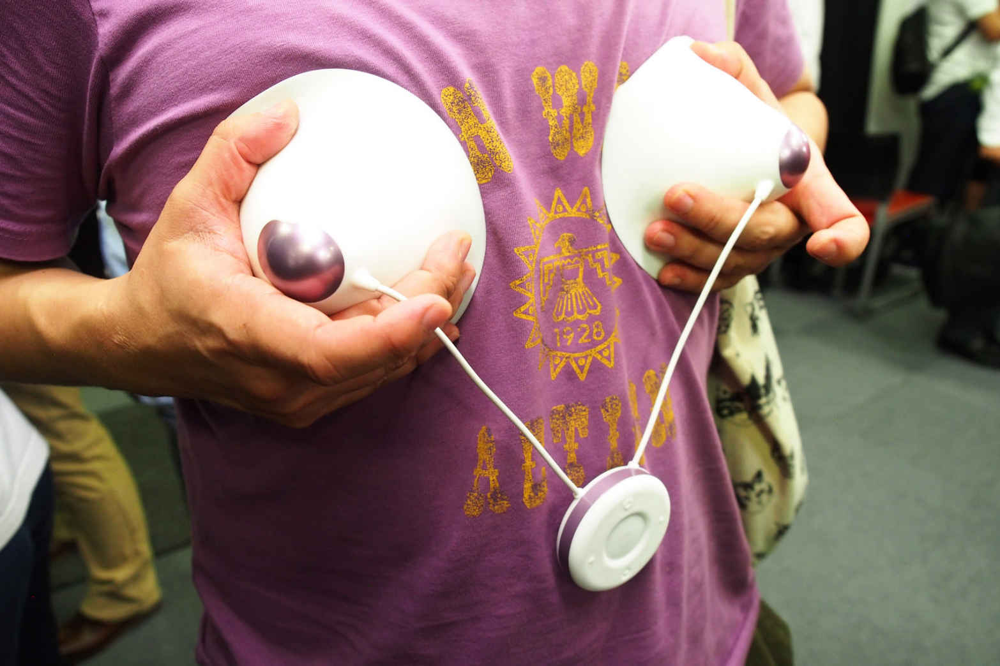
「アダルトVRフェスタ01」会場でも、フィードバックデバイスとしてVRと連動するオナニーグッズが展示されていた。
――海外でのアダルトVRはどれくらい進んでるんでしょうか？
吉田 海外は日本よりも技術的に2年以上進んでいるとは言われています。先ほども言ったようにモザイクが必要ないというのも大きいですね。海外のゲームショーにもアダルトVRが異例で出展されたようですがどのブースよりも列ができていそうです。やはり海外でもアダルトVRへの期待感は共通しているようで、日本ならではのアダルトVRコンテンツを世界に向けて展開していきたいですね。
――アダルトVRを普及させたいという強い思いはどこから来てるんでしょうか？
吉田 自分はもともとオナニーが大好きで、中学・高校生の頃には「今日はどれで抜こうかな」とエロ本やアダルトビデオのオカズを探す段階から6時間くらいかけてしていたんですね。ある時、これはやはり時間がもったいないなと。
――その気持ちはわからないでもないですが、オカズ探しに6時間はさすがに...。
吉田 人間って消費ではなく生産することが大事だと思っているんです。オナニーはどちらかというと消費に近いので、その時間を人間の進歩に充てるべきだなと考えてまして...。セックスにしても今までは無駄な時間をかけてる人が非常に多かったんですよね。デートを重ねてお金を使ってセックスまでもっていくみたいな...。そういうコストや時間がかかる部分をヴァーチャルセックスでポンと出来てしまえば、その時間が別の事に使えるんです。それは仕事で何かを生み出す事に使ってもいいですし、恋愛に関するいざこざなんかも減らせるんじゃないかと。
――啓蒙的な話に発展しましたね。では最後に、今後アダルトVRが広く普及していくにあたっての課題についてどうお考えですか？
吉田 前回の「アダルトVRフェスタ01」の反省を活かして、2016年8月末にはより大きな会場でイベントを行う予定です。やはりVRの課題は実際に体験してもらわないとその魅力が伝わりづらいことだと思うので、少しでも多くの方に一度試していただきたいですね。私はアダルトVRは既存のアダルト動画の完全な上位互換だと考えていますので、ソフトやハードはまだ出揃っていませんが、魅力を感じてプレイしてくれる方が増えれば一気に性産業のマーケットを置き換えることが出来ると思っています。
――繰り返しになりますが、ビデオデッキの普及などエロが新しいメディアの市場を開拓するという事例は過去にもありましたからね。
吉田 市場として成立するかという点を置いておいても、私個人としてはアダルトVRは、これまで容姿や年齢、経済面や性癖など、様々な問題でセックスに対して不幸な思いをしてきた全ての人を幸せにするものだと思っているんです。
アダルトVRの普及によって、性的な行為というのはヴァーチャルなものに置き換わってしまって、現実社会はハイパフォーマンスで、かつ誰にでも優しく出来るというような世界が訪れると信じています。
アダルトVRで、世界のセックスが変わる！
発行日 平成28年８月15日
著 者 吉田 健人
発 行 株式会社ＩＣＥ
東京都千代田区神田神保町１―１０５
（本の内容に関するお問い合わせ先）
quickbooks_info@impress.co.jp
発 売 株式会社インプレス
Copyright© 2016 Kento Yoshida All rights reserved.
画像協力
© ImagineVR Inc.
編集 小柴 ケン
表紙デザイン・ロゴ R design studio